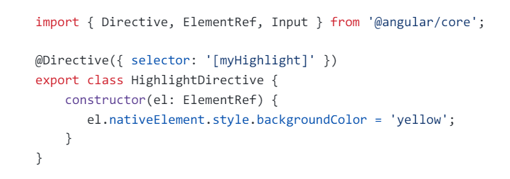
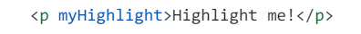
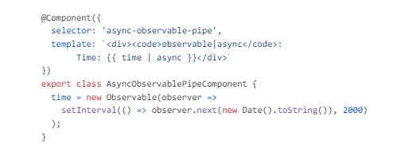
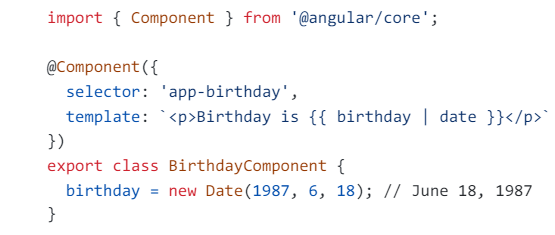
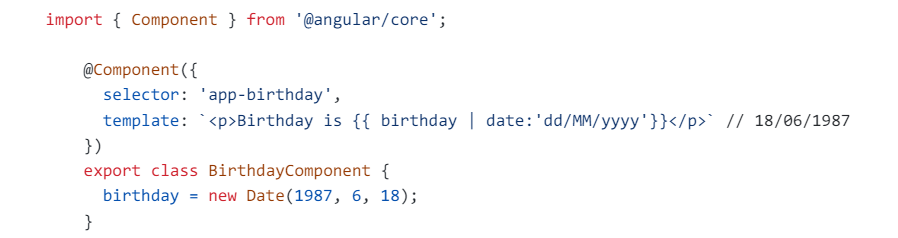

Angular is a powerful open-source web development framework maintained by Google. It's used for building dynamic and interactive web applications with HTML, CSS, and TypeScript. Angular simplifies development through its component-based architecture, two-way data binding, dependency injection, routing, forms handling, and HTTP client.
What is TypeScript? Why is it used in Angular?
TypeScript is a typed superset of JavaScript created by Microsoft that adds optional types, classes, async/await, and many other features,
and compiles to plain JavaScript. Angular built entirely in TypeScript and used as a primary language. You can install it globally as
TypeScript is used in Angular because it provides better tooling support, improved type checking, and additional features like decorators, interfaces, etc.
What is Data-binding in Angular?
Imporatant
Data binding in Angular refers to the synchronization of data between the components of an application and the HTML elements in the user interface. There are mainly four types of data binding supported by Angular:
<img [src]="imageUrl">
3. Event Binding == Binding the Event
4. Two-Way Binding
Two-way binding allows you to both display and update a component property from within a template. It combines property binding and event binding using the ngModel directive, typically used with form elements.Example:
What is the difference between AngularJS and Angular?
Imporatant
Angular is a completely revived component-based framework in which an application is a tree of individual components. Some of the major difference in tabular form
Angular
AngularJS
This is based on Service/Controller
It is based on MVC architecture
Introduced the TypeScript to write the application
It uses JavaScript to build the application
This is a component based UI approach
Based on controllers concept
Developed considering mobile platform
Not a mobile friendly framework
Ease to create SEO friendly applications
Difficulty in SEO friendly application development
What are the key components of Angular?
Component: These are the basic building blocks of Angular applications to control HTML views.
Modules: An Angular module is a set of Angular basic building blocks like components, directives, services, etc. An application is divided into logical pieces, and each piece of code is called a "module" which performs a single task.
Templates: This represents the views of an Angular application.
Services: It is used to create components which can be shared across the entire application.
Metadata: This can be used to add more data to an Angular class.
What are directives?
Directives add behaviour to an existing DOM element or an existing component instance.

Now this directive extends HTML element behavior with a yellow background as below

What is a module?
Modules are logical boundaries in your application and the application is divided into separate modules to separate the functionality of
your application. Lets take an example of app.module.ts root module declared with @ngModule decorator as below,
imports: The imports option is used to import other dependent modules. The BrowserModule is required by default for any web-based Angular application.
declarations: The declarations option is used to define components in the respective module.
bootstrap: The bootstrap option tells Angular which Component to bootstrap in the application.
providers: The providers option is used to configure a set of injectable objects that are available in the injector of this module.
entryComponents: The entryComponents option is a set of components dynamically loaded into the view.
What are lifecycle hooks available?
Imporatant
ngOnChanges: Called every time the input properties of a component or directive are changed.
ngOnInit: Called once, after the first ngOnChanges.
ngDoCheck: Called during every change detection run, immediately after ngOnChanges and ngOnInit.
ngAfterContentInit: Called after ngOnInit when Angular has finished initializing the component's content.
ngAfterContentChecked: Called after ngAfterContentInit and every subsequent ngDoCheck.
ngAfterViewInit: Called after ngAfterContentChecked when Angular has finished initializing the component's views.
ngAfterViewChecked: Called after ngAfterViewInit and every subsequent ngAfterContentChecked.
ngOnDestroy: Called just before Angular destroys the directive/component.
What is metadata?
Metadata in Angular refers to additional information provided via decorators like Component, @Directive, @Pipe, and @NgModule. This information helps Angular understand how to instantiate, configure, and use classes within an application, such as components, directives, pipes, and modules. It includes details like selectors, templates, styles, dependencies, and more.
Metadata store the class information.
What is dependency injection in Angular?
Dependency injection (DI), is an important application design pattern in which a class asks for dependencies from external sources rather
than creating them itself. Angular comes with its own dependency injection framework for resolving dependencies( services or objects that
a class needs to perform its function).So you can have your services depend on other services throughout your application.
What is the purpose of async pipe?
Imporatant
The AsyncPipe subscribes to an observable or promise and returns the latest value it has emitted. When a new value is emitted, the pipe
marks the component to be checked for changes. Let's take a time observable which continuously updates the view for every 2 seconds with the current time.

What are pipes?
Imporatant
A pipe takes in data as input and transforms it to a desired output. For example, let us take a pipe to transform a component's birthday property into a human-friendly date using date pipe.

What is a parameterized pipe?
Imporatant
A pipe can accept any number of optional parameters to fine-tune its output. The parameterized pipe can be created by declaring the pipe
name with a colon ( : ) and then the parameter value. If the pipe accepts multiple parameters, separate the values with colons. Let's take a
birthday example with a particular format(dd/MM/yyyy):

What is the difference between pure and impure pipe?
Imporatant
A pure pipe is only called when Angular detects a change in the value or the parameters passed to a pipe. For example, any changes to a
primitive input value (String, Number, Boolean, Symbol) or a changed object reference (Date, Array, Function, Object).
An impure pipe is
called for every change detection cycle no matter whether the value or parameters changes. i.e, An impure pipe is called often, as often as
every keystroke or mouse-move.
What is a custom pipe?
Imporatant
A custom pipe in Angular is a reusable function that transforms data in templates. It allows you to format, filter, or otherwise manipulate data before displaying it in the user interface. Custom pipes are created using the PipeTransform interface and can be applied to data using the pipe symbol (|) in Angular templates.
What is a bootstrapping module?
Imporatant
Every application has at least one Angular module, the root module that you bootstrap to launch the application is called as bootstrapping
module. It is commonly known as AppModule. T
Example : bootstrap: [AppComponent]
What are observables?
Imporatant
Observables are declarative which provide support for passing messages between publishers and subscribers in your application. They are
mainly used for event handling, asynchronous programming, and handling multiple values. In this case, you define a function for
publishing values, but it is not executed until a consumer subscribes to it. The subscribed consumer then receives notifications until the
function completes, or until they unsubscribe.
What is RxJS?
Imporatant
RxJS is a library for composing asynchronous and callback-based code in a functional, reactive style using Observables. Many APIs such as
HttpClient produce and consume RxJS Observables and also uses operators for processing observables.
What are the various kinds of directives?
Imporatant
Components: These are directives with a template.
Structural directives: These directives change the DOM layout by adding and removing DOM elements. *ngFor, *ngIf, *ngSwitch
Attribute directives: These directives change the appearance or behavior of an element, component, or another directive. *ngStyle, *ngClass
What is Angular Router?
Imporatant
Angular Router is a mechanism in which navigation happens from one view to the next as users perform application tasks. It borrows the
concepts or model of browser's application navigation.
What is zone?
Imporatant
A Zone is an execution context that persists across async tasks. Angular relies on zone.js to run Angular's change detection processes when
native JavaScript operations raise events